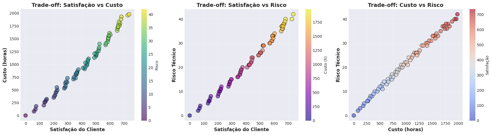
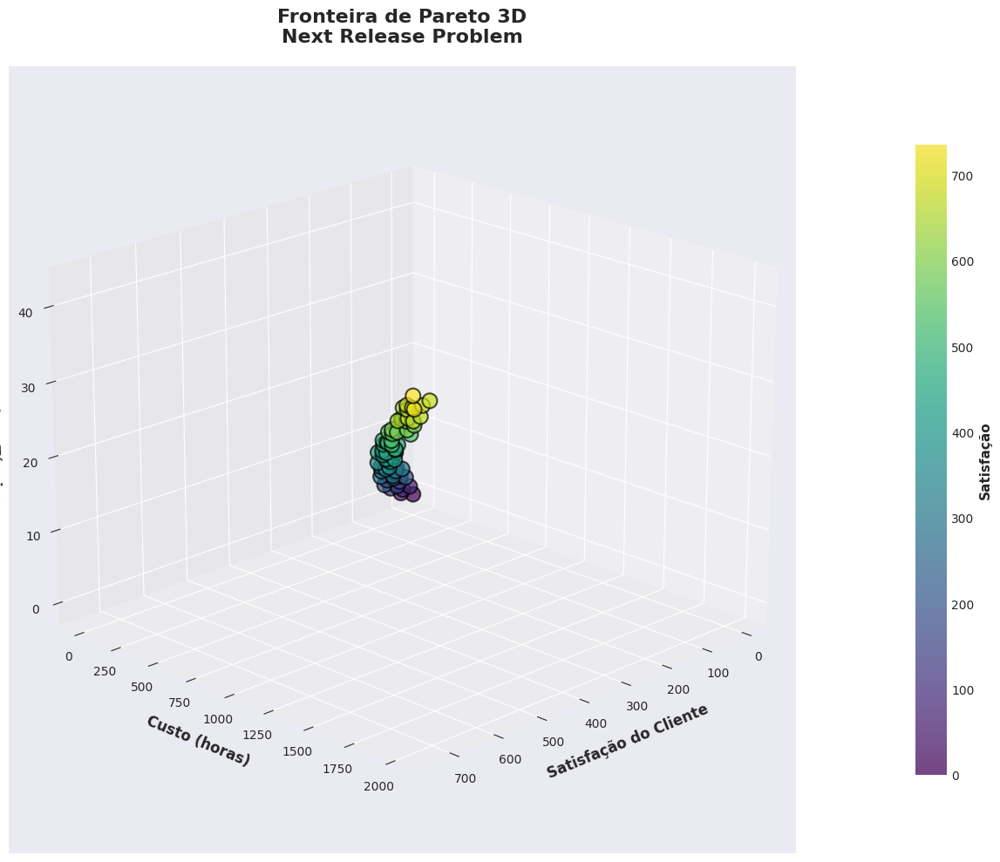
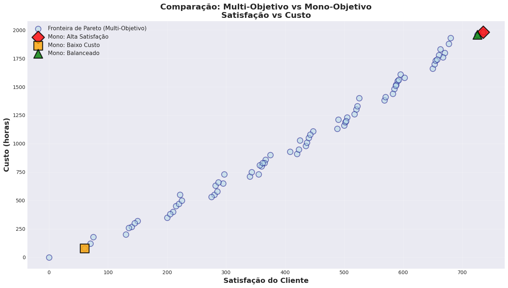

Workshop Prático: Otimização Multi-Objetivo com Pymoo#
Objetivo: Implementar um sistema completo de otimização multi-objetivo usando a biblioteca Pymoo e o algoritmo NSGA-II para resolver o Next Release Problem.
Problema: Selecionar features para a próxima versão de um software, balanceando satisfação do cliente, custo de desenvolvimento e risco técnico.
Configuração do Ambiente#
# Instalação de dependências
!pip install pymoo numpy matplotlib pandas seaborn plotly scipy -q
[notice] A new release of pip is available: 25.0.1 -> 25.3
[notice] To update, run: pip install --upgrade pip
# Configurações para usar CPU e silenciar logs
import os
os.environ['CUDA_VISIBLE_DEVICES'] = ''
import warnings
warnings.filterwarnings('ignore')
# Imports principais
import numpy as np
import matplotlib.pyplot as plt
import seaborn as sns
import pandas as pd
import random
from typing import List, Tuple, Dict, Optional, Any
from dataclasses import dataclass
import copy
# Imports do Pymoo
from pymoo.core.problem import Problem
from pymoo.algorithms.moo.nsga2 import NSGA2
from pymoo.operators.crossover.pntx import TwoPointCrossover
from pymoo.operators.mutation.bitflip import BitflipMutation
from pymoo.operators.sampling.rnd import BinaryRandomSampling
from pymoo.optimize import minimize
from pymoo.indicators.hv import HV
from pymoo.indicators.igd import IGD
from pymoo.util.nds.non_dominated_sorting import NonDominatedSorting
# Configurações de visualização
plt.style.use('seaborn-v0_8-darkgrid')
sns.set_palette("husl")
plt.rcParams['figure.figsize'] = (12, 8)
random.seed(42)
np.random.seed(42)
print("✅ Ambiente configurado com sucesso!")
print("🔧 Usando CPU apenas")
print("📚 Bibliotecas carregadas")
print(f"📦 Pymoo instalado e pronto para uso")
✅ Ambiente configurado com sucesso!
🔧 Usando CPU apenas
📚 Bibliotecas carregadas
📦 Pymoo instalado e pronto para uso
Parte 1: Definição do Problema e Dataset#
Vamos criar um dataset realista de features para o Next Release Problem com múltiplos atributos.
@dataclass
class Feature:
"""
Representa uma feature candidata para a próxima release.
Attributes:
nome: Nome descritivo da feature
satisfacao: Score de satisfação do cliente (1-100)
custo: Custo em horas de desenvolvimento (50-500h)
risco: Risco técnico (1-10, onde 10 é muito arriscado)
impacto_performance: Impacto na performance do sistema (-10 a +10)
"""
nome: str
satisfacao: int
custo: int
risco: int
impacto_performance: int
# Dataset de 20 features realistas
features_dataset = [
Feature("Autenticação Biométrica", 85, 320, 7, -3),
Feature("Chat em Tempo Real", 90, 450, 8, -5),
Feature("Análise Preditiva com IA", 95, 500, 9, -4),
Feature("Dashboard Customizável", 75, 180, 4, -2),
Feature("Integração com Redes Sociais", 70, 150, 3, -1),
Feature("Notificações Push Inteligentes", 80, 200, 5, -2),
Feature("Modo Offline Avançado", 85, 400, 8, 2),
Feature("Busca por Voz", 65, 280, 6, -3),
Feature("Tema Escuro/Claro", 60, 80, 2, 1),
Feature("Exportação de Relatórios PDF", 70, 120, 3, 0),
Feature("Sistema de Gamificação", 78, 350, 6, -2),
Feature("Integração com Blockchain", 55, 480, 10, -6),
Feature("Análise de Sentimento", 72, 380, 7, -3),
Feature("Reconhecimento de Imagem", 88, 420, 8, -4),
Feature("API REST Pública", 82, 280, 5, -1),
Feature("Multi-idiomas (i18n)", 68, 220, 4, 1),
Feature("Sistema de Auditoria Completo", 75, 300, 5, -2),
Feature("Cache Distribuído", 70, 350, 7, 3),
Feature("Compressão de Dados Avançada", 65, 180, 4, 2),
Feature("Backup Automático em Nuvem", 80, 250, 5, -1),
]
# Exibir dataset em formato tabular
df_features = pd.DataFrame([
{
'Feature': f.nome,
'Satisfação': f.satisfacao,
'Custo (h)': f.custo,
'Risco': f.risco,
'Impacto Perf.': f.impacto_performance
}
for f in features_dataset
])
print("\n📊 Dataset de Features para o Next Release Problem:\n")
print(df_features.to_string(index=False))
print(f"\n📈 Total de features candidatas: {len(features_dataset)}")
print(f"💰 Custo total se todas forem implementadas: {sum(f.custo for f in features_dataset)}h")
print(f"😊 Satisfação total possível: {sum(f.satisfacao for f in features_dataset)}")
📊 Dataset de Features para o Next Release Problem:
Feature Satisfação Custo (h) Risco Impacto Perf.
Autenticação Biométrica 85 320 7 -3
Chat em Tempo Real 90 450 8 -5
Análise Preditiva com IA 95 500 9 -4
Dashboard Customizável 75 180 4 -2
Integração com Redes Sociais 70 150 3 -1
Notificações Push Inteligentes 80 200 5 -2
Modo Offline Avançado 85 400 8 2
Busca por Voz 65 280 6 -3
Tema Escuro/Claro 60 80 2 1
Exportação de Relatórios PDF 70 120 3 0
Sistema de Gamificação 78 350 6 -2
Integração com Blockchain 55 480 10 -6
Análise de Sentimento 72 380 7 -3
Reconhecimento de Imagem 88 420 8 -4
API REST Pública 82 280 5 -1
Multi-idiomas (i18n) 68 220 4 1
Sistema de Auditoria Completo 75 300 5 -2
Cache Distribuído 70 350 7 3
Compressão de Dados Avançada 65 180 4 2
Backup Automático em Nuvem 80 250 5 -1
📈 Total de features candidatas: 20
💰 Custo total se todas forem implementadas: 5890h
😊 Satisfação total possível: 1508
Parte 2: Formulação Multi-Objetivo com Pymoo#
Vamos implementar o Next Release Problem como um problema de otimização multi-objetivo usando a estrutura do Pymoo.
class NextReleaseProblem(Problem):
"""
Next Release Problem formulado como otimização multi-objetivo.
Representação: Vetor binário de tamanho N (número de features)
onde 1 indica que a feature foi selecionada e 0 caso contrário.
Objetivos:
1. Maximizar Satisfação Total do Cliente
2. Minimizar Custo Total de Desenvolvimento
3. Minimizar Risco Total do Projeto
Restrições:
- Budget máximo: 2000 horas
- Número máximo de features: 12
"""
def __init__(self, features: List[Feature], max_budget: int = 2000, max_features: int = 12):
"""
Inicializa o problema.
Parameters:
features: Lista de features candidatas
max_budget: Orçamento máximo em horas
max_features: Número máximo de features que podem ser selecionadas
"""
self.features = features
self.max_budget = max_budget
self.max_features = max_features
self.n_features = len(features)
# Definir o problema: n variáveis binárias, 3 objetivos, 2 restrições
super().__init__(
n_var=self.n_features,
n_obj=3,
n_ieq_constr=2,
xl=0, # limite inferior (binary)
xu=1, # limite superior (binary)
vtype=bool # tipo de variável: booleana
)
def _evaluate(self, X, out, *args, **kwargs):
"""
Avalia as soluções.
Parameters:
X: Matriz de soluções (população x n_features)
out: Dicionário para armazenar objetivos e restrições
"""
# X é uma matriz onde cada linha é uma solução (indivíduo)
n_solutions = X.shape[0]
# Arrays para armazenar objetivos
f1 = np.zeros(n_solutions) # Satisfação (maximizar -> negar para minimizar)
f2 = np.zeros(n_solutions) # Custo (minimizar)
f3 = np.zeros(n_solutions) # Risco (minimizar)
# Arrays para restrições
g1 = np.zeros(n_solutions) # Budget constraint
g2 = np.zeros(n_solutions) # Max features constraint
for i, solution in enumerate(X):
# Calcular objetivos
satisfacao_total = sum(
self.features[j].satisfacao
for j in range(self.n_features)
if solution[j]
)
custo_total = sum(
self.features[j].custo
for j in range(self.n_features)
if solution[j]
)
risco_total = sum(
self.features[j].risco
for j in range(self.n_features)
if solution[j]
)
n_selected = np.sum(solution)
# Pymoo minimiza por padrão, então negamos satisfação
f1[i] = -satisfacao_total
f2[i] = custo_total
f3[i] = risco_total
# Restrições (g <= 0 é viável)
g1[i] = custo_total - self.max_budget # custo <= max_budget
g2[i] = n_selected - self.max_features # n_features <= max_features
out["F"] = np.column_stack([f1, f2, f3])
out["G"] = np.column_stack([g1, g2])
# Criar instância do problema
problem = NextReleaseProblem(
features=features_dataset,
max_budget=2000,
max_features=12
)
print("✅ Problema NextReleaseProblem criado com sucesso!")
print(f"📊 Dimensões do problema:")
print(f" - Variáveis de decisão: {problem.n_var}")
print(f" - Objetivos: {problem.n_obj}")
print(f" - Restrições: {problem.n_ieq_constr}")
print(f"\n🎯 Objetivos:")
print(f" 1. Maximizar Satisfação do Cliente")
print(f" 2. Minimizar Custo de Desenvolvimento")
print(f" 3. Minimizar Risco Técnico")
print(f"\n⚠️ Restrições:")
print(f" - Budget máximo: {problem.max_budget} horas")
print(f" - Features máximas: {problem.max_features}")
✅ Problema NextReleaseProblem criado com sucesso!
📊 Dimensões do problema:
- Variáveis de decisão: 20
- Objetivos: 3
- Restrições: 2
🎯 Objetivos:
1. Maximizar Satisfação do Cliente
2. Minimizar Custo de Desenvolvimento
3. Minimizar Risco Técnico
⚠️ Restrições:
- Budget máximo: 2000 horas
- Features máximas: 12
Parte 3: Configuração e Execução do NSGA-II#
Agora vamos configurar e executar o algoritmo NSGA-II para resolver nosso problema multi-objetivo.
# Configurar o algoritmo NSGA-II
algorithm = NSGA2(
pop_size=100, # Tamanho da população
sampling=BinaryRandomSampling(), # Amostragem aleatória binária
crossover=TwoPointCrossover(prob=0.9), # Crossover de dois pontos
mutation=BitflipMutation(prob=1.0/problem.n_var), # Mutação bit-flip
eliminate_duplicates=True # Eliminar soluções duplicadas
)
print("🔧 Algoritmo NSGA-II configurado!")
print(f" - População: {algorithm.pop_size} indivíduos")
print(f" - Crossover: Two-Point (prob=0.9)")
print(f" - Mutação: Bit-Flip (prob={1.0/problem.n_var:.4f})")
print(f"\n⏳ Iniciando otimização...")
# Executar a otimização
result = minimize(
problem,
algorithm,
('n_gen', 50), # Critério de parada: 50 gerações
seed=42,
verbose=True
)
print(f"\n✅ Otimização concluída!")
print(f"📊 Soluções na Fronteira de Pareto: {len(result.F)}")
🔧 Algoritmo NSGA-II configurado!
- População: 100 indivíduos
- Crossover: Two-Point (prob=0.9)
- Mutação: Bit-Flip (prob=0.0500)
⏳ Iniciando otimização...
==========================================================================================
n_gen | n_eval | n_nds | cv_min | cv_avg | eps | indicator
==========================================================================================
1 | 100 | 9 | 0.000000E+00 | 9.217100E+02 | - | -
2 | 200 | 16 | 0.000000E+00 | 2.788000E+02 | 0.2840909091 | ideal
3 | 300 | 25 | 0.000000E+00 | 1.430000E+01 | 0.0063424947 | ideal
4 | 400 | 28 | 0.000000E+00 | 0.000000E+00 | 0.0083857442 | ideal
5 | 500 | 33 | 0.000000E+00 | 0.000000E+00 | 0.1315789474 | ideal
6 | 600 | 34 | 0.000000E+00 | 0.000000E+00 | 0.0704441041 | ideal
7 | 700 | 43 | 0.000000E+00 | 0.000000E+00 | 0.0150829563 | ideal
8 | 800 | 42 | 0.000000E+00 | 0.000000E+00 | 0.0119477333 | f
9 | 900 | 43 | 0.000000E+00 | 0.000000E+00 | 0.0135556157 | f
10 | 1000 | 47 | 0.000000E+00 | 0.000000E+00 | 0.0104477612 | ideal
11 | 1100 | 52 | 0.000000E+00 | 0.000000E+00 | 0.0147058824 | ideal
12 | 1200 | 52 | 0.000000E+00 | 0.000000E+00 | 0.0310880829 | nadir
13 | 1300 | 55 | 0.000000E+00 | 0.000000E+00 | 0.0052477663 | f
14 | 1400 | 61 | 0.000000E+00 | 0.000000E+00 | 0.0620689655 | ideal
15 | 1500 | 66 | 0.000000E+00 | 0.000000E+00 | 0.0136054422 | ideal
16 | 1600 | 68 | 0.000000E+00 | 0.000000E+00 | 0.0006611931 | f
17 | 1700 | 68 | 0.000000E+00 | 0.000000E+00 | 0.0016336163 | f
18 | 1800 | 71 | 0.000000E+00 | 0.000000E+00 | 0.0027662160 | f
19 | 1900 | 71 | 0.000000E+00 | 0.000000E+00 | 0.000000E+00 | f
20 | 2000 | 71 | 0.000000E+00 | 0.000000E+00 | 0.000000E+00 | f
21 | 2100 | 72 | 0.000000E+00 | 0.000000E+00 | 0.0004178764 | f
22 | 2200 | 72 | 0.000000E+00 | 0.000000E+00 | 0.0004178764 | f
23 | 2300 | 72 | 0.000000E+00 | 0.000000E+00 | 0.0004178764 | f
24 | 2400 | 72 | 0.000000E+00 | 0.000000E+00 | 0.0004178764 | f
25 | 2500 | 72 | 0.000000E+00 | 0.000000E+00 | 0.0004178764 | f
26 | 2600 | 73 | 0.000000E+00 | 0.000000E+00 | 0.0008201700 | f
27 | 2700 | 73 | 0.000000E+00 | 0.000000E+00 | 0.0008201700 | f
28 | 2800 | 73 | 0.000000E+00 | 0.000000E+00 | 0.0008201700 | f
29 | 2900 | 74 | 0.000000E+00 | 0.000000E+00 | 0.0012900106 | f
30 | 3000 | 74 | 0.000000E+00 | 0.000000E+00 | 0.0012900106 | f
31 | 3100 | 74 | 0.000000E+00 | 0.000000E+00 | 0.0012900106 | f
32 | 3200 | 74 | 0.000000E+00 | 0.000000E+00 | 0.0012900106 | f
33 | 3300 | 74 | 0.000000E+00 | 0.000000E+00 | 0.0012900106 | f
34 | 3400 | 74 | 0.000000E+00 | 0.000000E+00 | 0.0012900106 | f
35 | 3500 | 74 | 0.000000E+00 | 0.000000E+00 | 0.0012900106 | f
36 | 3600 | 74 | 0.000000E+00 | 0.000000E+00 | 0.0012900106 | f
37 | 3700 | 74 | 0.000000E+00 | 0.000000E+00 | 0.0012900106 | f
38 | 3800 | 74 | 0.000000E+00 | 0.000000E+00 | 0.0012900106 | f
39 | 3900 | 74 | 0.000000E+00 | 0.000000E+00 | 0.0012900106 | f
40 | 4000 | 74 | 0.000000E+00 | 0.000000E+00 | 0.0012900106 | f
41 | 4100 | 74 | 0.000000E+00 | 0.000000E+00 | 0.0012900106 | f
42 | 4200 | 74 | 0.000000E+00 | 0.000000E+00 | 0.0012900106 | f
43 | 4300 | 72 | 0.000000E+00 | 0.000000E+00 | 0.0014435189 | f
44 | 4400 | 72 | 0.000000E+00 | 0.000000E+00 | 0.0014435189 | f
45 | 4500 | 72 | 0.000000E+00 | 0.000000E+00 | 0.0014435189 | f
46 | 4600 | 72 | 0.000000E+00 | 0.000000E+00 | 0.0014435189 | f
47 | 4700 | 72 | 0.000000E+00 | 0.000000E+00 | 0.0014435189 | f
48 | 4800 | 72 | 0.000000E+00 | 0.000000E+00 | 0.0014435189 | f
49 | 4900 | 72 | 0.000000E+00 | 0.000000E+00 | 0.0014435189 | f
50 | 5000 | 73 | 0.000000E+00 | 0.000000E+00 | 0.0017592368 | f
✅ Otimização concluída!
📊 Soluções na Fronteira de Pareto: 73
Parte 4: Análise dos Resultados#
Vamos analisar as soluções encontradas e visualizar a Fronteira de Pareto.
# Extrair soluções da fronteira de Pareto
pareto_solutions = result.X
pareto_objectives = result.F
# Converter objetivos de volta (negamos satisfação novamente)
pareto_objectives_adjusted = pareto_objectives.copy()
pareto_objectives_adjusted[:, 0] = -pareto_objectives_adjusted[:, 0] # Satisfação volta ao positivo
# Criar DataFrame com os resultados
df_pareto = pd.DataFrame({
'Solução': [f"Sol_{i+1}" for i in range(len(pareto_objectives_adjusted))],
'Satisfação': pareto_objectives_adjusted[:, 0],
'Custo (h)': pareto_objectives_adjusted[:, 1],
'Risco': pareto_objectives_adjusted[:, 2],
'N_Features': [np.sum(sol) for sol in pareto_solutions]
})
print("\n📊 Fronteira de Pareto - Top 10 Soluções:\n")
print(df_pareto.head(10).to_string(index=False))
# Estatísticas da fronteira
print(f"\n📈 Estatísticas da Fronteira de Pareto:")
print(f" - Soluções encontradas: {len(pareto_objectives_adjusted)}")
print(f" - Satisfação: Min={df_pareto['Satisfação'].min():.0f}, Max={df_pareto['Satisfação'].max():.0f}, Média={df_pareto['Satisfação'].mean():.1f}")
print(f" - Custo: Min={df_pareto['Custo (h)'].min():.0f}, Max={df_pareto['Custo (h)'].max():.0f}, Média={df_pareto['Custo (h)'].mean():.1f}")
print(f" - Risco: Min={df_pareto['Risco'].min():.0f}, Max={df_pareto['Risco'].max():.0f}, Média={df_pareto['Risco'].mean():.1f}")
print(f" - Features: Min={df_pareto['N_Features'].min():.0f}, Max={df_pareto['N_Features'].max():.0f}, Média={df_pareto['N_Features'].mean():.1f}")
📊 Fronteira de Pareto - Top 10 Soluções:
Solução Satisfação Custo (h) Risco N_Features
Sol_1 130.0 200.0 5.0 2
Sol_2 210.0 400.0 10.0 3
Sol_3 -0.0 0.0 0.0 0
Sol_4 200.0 350.0 8.0 3
Sol_5 140.0 270.0 6.0 2
Sol_6 70.0 120.0 3.0 1
Sol_7 280.0 550.0 13.0 4
Sol_8 60.0 80.0 2.0 1
Sol_9 150.0 320.0 8.0 2
Sol_10 275.0 530.0 12.0 4
📈 Estatísticas da Fronteira de Pareto:
- Soluções encontradas: 73
- Satisfação: Min=-0, Max=735, Média=418.2
- Custo: Min=0, Max=1980, Média=1022.3
- Risco: Min=0, Max=42, Média=22.0
- Features: Min=0, Max=10, Média=5.8
Parte 5: Visualização da Fronteira de Pareto#
Vamos criar visualizações 2D e 3D para entender melhor os trade-offs entre os objetivos.
# Visualização 2D: Trade-offs entre pares de objetivos
fig, axes = plt.subplots(1, 3, figsize=(18, 5))
# Satisfação vs Custo
axes[0].scatter(
pareto_objectives_adjusted[:, 0],
pareto_objectives_adjusted[:, 1],
c=pareto_objectives_adjusted[:, 2],
cmap='viridis',
s=100,
alpha=0.6,
edgecolors='black'
)
axes[0].set_xlabel('Satisfação do Cliente', fontsize=12, fontweight='bold')
axes[0].set_ylabel('Custo (horas)', fontsize=12, fontweight='bold')
axes[0].set_title('Trade-off: Satisfação vs Custo', fontsize=14, fontweight='bold')
axes[0].grid(True, alpha=0.3)
cbar1 = plt.colorbar(axes[0].collections[0], ax=axes[0])
cbar1.set_label('Risco', fontsize=10)
# Satisfação vs Risco
axes[1].scatter(
pareto_objectives_adjusted[:, 0],
pareto_objectives_adjusted[:, 2],
c=pareto_objectives_adjusted[:, 1],
cmap='plasma',
s=100,
alpha=0.6,
edgecolors='black'
)
axes[1].set_xlabel('Satisfação do Cliente', fontsize=12, fontweight='bold')
axes[1].set_ylabel('Risco Técnico', fontsize=12, fontweight='bold')
axes[1].set_title('Trade-off: Satisfação vs Risco', fontsize=14, fontweight='bold')
axes[1].grid(True, alpha=0.3)
cbar2 = plt.colorbar(axes[1].collections[0], ax=axes[1])
cbar2.set_label('Custo (h)', fontsize=10)
# Custo vs Risco
axes[2].scatter(
pareto_objectives_adjusted[:, 1],
pareto_objectives_adjusted[:, 2],
c=pareto_objectives_adjusted[:, 0],
cmap='coolwarm',
s=100,
alpha=0.6,
edgecolors='black'
)
axes[2].set_xlabel('Custo (horas)', fontsize=12, fontweight='bold')
axes[2].set_ylabel('Risco Técnico', fontsize=12, fontweight='bold')
axes[2].set_title('Trade-off: Custo vs Risco', fontsize=14, fontweight='bold')
axes[2].grid(True, alpha=0.3)
cbar3 = plt.colorbar(axes[2].collections[0], ax=axes[2])
cbar3.set_label('Satisfação', fontsize=10)
plt.tight_layout()
plt.show()
print("📊 Visualizações 2D criadas!")

📊 Visualizações 2D criadas!
# Visualização 3D da Fronteira de Pareto
from mpl_toolkits.mplot3d import Axes3D
fig = plt.figure(figsize=(14, 10))
ax = fig.add_subplot(111, projection='3d')
# Plot 3D
scatter = ax.scatter(
pareto_objectives_adjusted[:, 0],
pareto_objectives_adjusted[:, 1],
pareto_objectives_adjusted[:, 2],
c=pareto_objectives_adjusted[:, 0],
cmap='viridis',
s=150,
alpha=0.7,
edgecolors='black',
linewidth=1.5
)
ax.set_xlabel('\nSatisfação do Cliente', fontsize=12, fontweight='bold')
ax.set_ylabel('\nCusto (horas)', fontsize=12, fontweight='bold')
ax.set_zlabel('\nRisco Técnico', fontsize=12, fontweight='bold')
ax.set_title('Fronteira de Pareto 3D\nNext Release Problem', fontsize=16, fontweight='bold', pad=20)
# Colorbar
cbar = plt.colorbar(scatter, ax=ax, pad=0.1, shrink=0.8)
cbar.set_label('Satisfação', fontsize=11, fontweight='bold')
ax.view_init(elev=20, azim=45)
plt.tight_layout()
plt.show()
print("🎨 Visualização 3D da Fronteira de Pareto criada!")

🎨 Visualização 3D da Fronteira de Pareto criada!
Parte 6: Soluções Representativas#
Vamos selecionar e analisar algumas soluções representativas da Fronteira de Pareto que representam diferentes estratégias.
# Selecionar soluções representativas
# 1. Foco em Alta Satisfação
idx_max_satisfacao = np.argmax(pareto_objectives_adjusted[:, 0])
# 2. Foco em Baixo Custo
idx_min_custo = np.argmin(pareto_objectives_adjusted[:, 1])
# 3. Foco em Baixo Risco
idx_min_risco = np.argmin(pareto_objectives_adjusted[:, 2])
# 4. Solução Balanceada (mais próxima do centro)
# Normalizar objetivos para [0, 1]
norm_objs = (pareto_objectives_adjusted - pareto_objectives_adjusted.min(axis=0)) / (
pareto_objectives_adjusted.max(axis=0) - pareto_objectives_adjusted.min(axis=0)
)
# Inverter satisfação (queremos alto) e custo/risco (queremos baixo)
norm_objs[:, 0] = 1 - norm_objs[:, 0] # Alta satisfação = 0 após normalização
# Distância do ponto "ideal" (1, 0, 0) - alta satisfação, baixo custo, baixo risco
ideal = np.array([0, 0, 0])
distances = np.linalg.norm(norm_objs - ideal, axis=1)
idx_balanceada = np.argmin(distances)
# Criar função para exibir detalhes de uma solução
def exibir_solucao(idx, nome):
print(f"\n{'='*70}")
print(f"🎯 {nome}")
print(f"{'='*70}")
sol = pareto_solutions[idx]
objs = pareto_objectives_adjusted[idx]
print(f"\n📊 Objetivos:")
print(f" - Satisfação do Cliente: {objs[0]:.0f}")
print(f" - Custo de Desenvolvimento: {objs[1]:.0f}h")
print(f" - Risco Técnico: {objs[2]:.0f}")
features_selecionadas = [
features_dataset[i].nome
for i in range(len(sol))
if sol[i]
]
print(f"\n✅ Features Selecionadas ({len(features_selecionadas)}):")
for i, feature_nome in enumerate(features_selecionadas, 1):
feature = next(f for f in features_dataset if f.nome == feature_nome)
print(f" {i:2d}. {feature_nome:40s} (Sat:{feature.satisfacao:2d}, Custo:{feature.custo:3d}h, Risco:{feature.risco:2d})")
return features_selecionadas
# Exibir soluções representativas
sol1_features = exibir_solucao(idx_max_satisfacao, "Estratégia 1: FOCO EM ALTA SATISFAÇÃO")
sol2_features = exibir_solucao(idx_min_custo, "Estratégia 2: FOCO EM BAIXO CUSTO")
sol3_features = exibir_solucao(idx_min_risco, "Estratégia 3: FOCO EM BAIXO RISCO")
sol4_features = exibir_solucao(idx_balanceada, "Estratégia 4: SOLUÇÃO BALANCEADA")
print(f"\n{'='*70}")
print("💡 Análise Estratégica:")
print(f"{'='*70}")
print("""
Cada solução representa um trade-off diferente:
- Estratégia 1: Maximiza satisfação, mas com custo e risco mais altos
- Estratégia 2: Minimiza custo, sacrificando satisfação e aceitando algum risco
- Estratégia 3: Minimiza risco, mas pode ter custo moderado
- Estratégia 4: Busca equilíbrio entre todos os objetivos
A escolha final depende das prioridades do negócio e contexto do projeto.
""")
======================================================================
🎯 Estratégia 1: FOCO EM ALTA SATISFAÇÃO
======================================================================
📊 Objetivos:
- Satisfação do Cliente: 735
- Custo de Desenvolvimento: 1980h
- Risco Técnico: 42
✅ Features Selecionadas (10):
1. Autenticação Biométrica (Sat:85, Custo:320h, Risco: 7)
2. Dashboard Customizável (Sat:75, Custo:180h, Risco: 4)
3. Integração com Redes Sociais (Sat:70, Custo:150h, Risco: 3)
4. Notificações Push Inteligentes (Sat:80, Custo:200h, Risco: 5)
5. Tema Escuro/Claro (Sat:60, Custo: 80h, Risco: 2)
6. Exportação de Relatórios PDF (Sat:70, Custo:120h, Risco: 3)
7. API REST Pública (Sat:82, Custo:280h, Risco: 5)
8. Multi-idiomas (i18n) (Sat:68, Custo:220h, Risco: 4)
9. Compressão de Dados Avançada (Sat:65, Custo:180h, Risco: 4)
10. Backup Automático em Nuvem (Sat:80, Custo:250h, Risco: 5)
======================================================================
🎯 Estratégia 2: FOCO EM BAIXO CUSTO
======================================================================
📊 Objetivos:
- Satisfação do Cliente: -0
- Custo de Desenvolvimento: 0h
- Risco Técnico: 0
✅ Features Selecionadas (0):
======================================================================
🎯 Estratégia 3: FOCO EM BAIXO RISCO
======================================================================
📊 Objetivos:
- Satisfação do Cliente: -0
- Custo de Desenvolvimento: 0h
- Risco Técnico: 0
✅ Features Selecionadas (0):
======================================================================
🎯 Estratégia 4: SOLUÇÃO BALANCEADA
======================================================================
📊 Objetivos:
- Satisfação do Cliente: 275
- Custo de Desenvolvimento: 530h
- Risco Técnico: 12
✅ Features Selecionadas (4):
1. Dashboard Customizável (Sat:75, Custo:180h, Risco: 4)
2. Integração com Redes Sociais (Sat:70, Custo:150h, Risco: 3)
3. Tema Escuro/Claro (Sat:60, Custo: 80h, Risco: 2)
4. Exportação de Relatórios PDF (Sat:70, Custo:120h, Risco: 3)
======================================================================
💡 Análise Estratégica:
======================================================================
Cada solução representa um trade-off diferente:
- Estratégia 1: Maximiza satisfação, mas com custo e risco mais altos
- Estratégia 2: Minimiza custo, sacrificando satisfação e aceitando algum risco
- Estratégia 3: Minimiza risco, mas pode ter custo moderado
- Estratégia 4: Busca equilíbrio entre todos os objetivos
A escolha final depende das prioridades do negócio e contexto do projeto.
Parte 7: Comparação com Abordagem Mono-Objetivo#
Vamos comparar a otimização multi-objetivo com abordagens mono-objetivo tradicionais usando diferentes pesos.
from pymoo.algorithms.soo.nonconvex.ga import GA
print("🔄 Comparando Multi-Objetivo vs Mono-Objetivo...")
print("\nExecutando otimizações mono-objetivo com diferentes pesos...\n")
# Definir classe para problema mono-objetivo com pesos
class NextReleaseProblemWeighted(Problem):
"""Versão mono-objetivo do problema com função de fitness ponderada."""
def __init__(self, features, max_budget, max_features, w1, w2, w3):
self.features = features
self.max_budget = max_budget
self.max_features = max_features
self.n_features = len(features)
self.w1 = w1 # peso para satisfação
self.w2 = w2 # peso para custo
self.w3 = w3 # peso para risco
super().__init__(
n_var=self.n_features,
n_obj=1, # Apenas um objetivo
n_ieq_constr=2,
xl=0,
xu=1,
vtype=bool
)
def _evaluate(self, X, out, *args, **kwargs):
n_solutions = X.shape[0]
f = np.zeros(n_solutions)
g1 = np.zeros(n_solutions)
g2 = np.zeros(n_solutions)
for i, solution in enumerate(X):
satisfacao = sum(self.features[j].satisfacao for j in range(self.n_features) if solution[j])
custo = sum(self.features[j].custo for j in range(self.n_features) if solution[j])
risco = sum(self.features[j].risco for j in range(self.n_features) if solution[j])
n_selected = np.sum(solution)
# Normalizar objetivos para [0, 1] para pesos terem significado
max_sat = sum(f.satisfacao for f in self.features)
max_custo = sum(f.custo for f in self.features)
max_risco = sum(f.risco for f in self.features)
sat_norm = satisfacao / max_sat
custo_norm = custo / max_custo
risco_norm = risco / max_risco
# Fitness ponderado (minimizar, então satisfação é negativa)
f[i] = -(self.w1 * sat_norm) + (self.w2 * custo_norm) + (self.w3 * risco_norm)
g1[i] = custo - self.max_budget
g2[i] = n_selected - self.max_features
out["F"] = f
out["G"] = np.column_stack([g1, g2])
# Configurações de pesos para testar
weight_configs = [
{"nome": "Alta Satisfação", "w1": 0.7, "w2": 0.2, "w3": 0.1},
{"nome": "Baixo Custo", "w1": 0.3, "w2": 0.6, "w3": 0.1},
{"nome": "Balanceado", "w1": 0.5, "w2": 0.3, "w3": 0.2},
]
mono_results = []
for config in weight_configs:
print(f"⚙️ Executando: {config['nome']} (w1={config['w1']}, w2={config['w2']}, w3={config['w3']})")
problem_mono = NextReleaseProblemWeighted(
features_dataset, 2000, 12,
config['w1'], config['w2'], config['w3']
)
algorithm_mono = GA(
pop_size=100,
sampling=BinaryRandomSampling(),
crossover=TwoPointCrossover(prob=0.9),
mutation=BitflipMutation(prob=1.0/problem_mono.n_var),
eliminate_duplicates=True
)
result_mono = minimize(
problem_mono,
algorithm_mono,
('n_gen', 50),
seed=42,
verbose=False
)
# Calcular objetivos reais da melhor solução
sol = result_mono.X
satisfacao = sum(features_dataset[j].satisfacao for j in range(len(sol)) if sol[j])
custo = sum(features_dataset[j].custo for j in range(len(sol)) if sol[j])
risco = sum(features_dataset[j].risco for j in range(len(sol)) if sol[j])
mono_results.append({
'Estratégia': config['nome'],
'Satisfação': satisfacao,
'Custo': custo,
'Risco': risco,
'N_Features': np.sum(sol)
})
print(f" ✅ Satisfação: {satisfacao:.0f}, Custo: {custo:.0f}h, Risco: {risco:.0f}\n")
df_mono = pd.DataFrame(mono_results)
print("\n" + "="*70)
print("📊 COMPARAÇÃO: Mono-Objetivo vs Multi-Objetivo")
print("="*70)
print("\n🔹 Resultados Mono-Objetivo:\n")
print(df_mono.to_string(index=False))
print("\n🔹 Amostra da Fronteira Multi-Objetivo (5 soluções):\n")
sample_idx = np.linspace(0, len(df_pareto)-1, min(5, len(df_pareto)), dtype=int)
print(df_pareto.iloc[sample_idx].to_string(index=False))
🔄 Comparando Multi-Objetivo vs Mono-Objetivo...
Executando otimizações mono-objetivo com diferentes pesos...
⚙️ Executando: Alta Satisfação (w1=0.7, w2=0.2, w3=0.1)
✅ Satisfação: 735, Custo: 1980h, Risco: 42
⚙️ Executando: Baixo Custo (w1=0.3, w2=0.6, w3=0.1)
✅ Satisfação: 60, Custo: 80h, Risco: 2
⚙️ Executando: Balanceado (w1=0.5, w2=0.3, w3=0.2)
✅ Satisfação: 725, Custo: 1960h, Risco: 40
======================================================================
📊 COMPARAÇÃO: Mono-Objetivo vs Multi-Objetivo
======================================================================
🔹 Resultados Mono-Objetivo:
Estratégia Satisfação Custo Risco N_Features
Alta Satisfação 735 1980 42 10
Baixo Custo 60 80 2 1
Balanceado 725 1960 40 10
🔹 Amostra da Fronteira Multi-Objetivo (5 soluções):
Solução Satisfação Custo (h) Risco N_Features
Sol_1 130.0 200.0 5.0 2
Sol_19 602.0 1580.0 34.0 8
Sol_37 222.0 550.0 11.0 3
Sol_55 135.0 260.0 6.0 2
Sol_73 592.0 1560.0 32.0 8
# Visualização comparativa
fig, ax = plt.subplots(figsize=(14, 8))
# Plot Fronteira de Pareto (multi-objetivo)
ax.scatter(
pareto_objectives_adjusted[:, 0],
pareto_objectives_adjusted[:, 1],
c='lightblue',
s=120,
alpha=0.5,
edgecolors='navy',
linewidth=1.5,
label='Fronteira de Pareto (Multi-Objetivo)',
zorder=2
)
# Plot soluções mono-objetivo
colors = ['red', 'orange', 'green']
markers = ['D', 's', '^']
for i, (_, row) in enumerate(df_mono.iterrows()):
ax.scatter(
row['Satisfação'],
row['Custo'],
c=colors[i],
marker=markers[i],
s=300,
alpha=0.8,
edgecolors='black',
linewidth=2,
label=f"Mono: {row['Estratégia']}",
zorder=3
)
ax.set_xlabel('Satisfação do Cliente', fontsize=14, fontweight='bold')
ax.set_ylabel('Custo (horas)', fontsize=14, fontweight='bold')
ax.set_title('Comparação: Multi-Objetivo vs Mono-Objetivo\nSatisfação vs Custo',
fontsize=16, fontweight='bold')
ax.legend(loc='best', fontsize=11, framealpha=0.9)
ax.grid(True, alpha=0.3)
plt.tight_layout()
plt.show()
print("\n💡 Insights:")
print("""
1. As soluções mono-objetivo são casos especiais da fronteira multi-objetivo
2. A fronteira de Pareto oferece muito mais opções de trade-off
3. Mudanças nos pesos podem levar a soluções muito diferentes
4. Com multi-objetivo, não precisamos decidir pesos a priori
5. A fronteira expõe explicitamente os trade-offs, facilitando decisões informadas
""")

💡 Insights:
1. As soluções mono-objetivo são casos especiais da fronteira multi-objetivo
2. A fronteira de Pareto oferece muito mais opções de trade-off
3. Mudanças nos pesos podem levar a soluções muito diferentes
4. Com multi-objetivo, não precisamos decidir pesos a priori
5. A fronteira expõe explicitamente os trade-offs, facilitando decisões informadas
Parte 8: Métricas de Qualidade da Fronteira#
Vamos calcular métricas para avaliar a qualidade da Fronteira de Pareto encontrada.
# Calcular Hypervolume
# Hypervolume mede o volume do espaço objetivo dominado pela fronteira
# Maior hypervolume = melhor fronteira
# Definir ponto de referência (pior caso para todos os objetivos)
ref_point = np.array([
-np.min(pareto_objectives_adjusted[:, 0]) * 1.1, # Pior satisfação (negativo)
np.max(pareto_objectives_adjusted[:, 1]) * 1.1, # Pior custo
np.max(pareto_objectives_adjusted[:, 2]) * 1.1 # Pior risco
])
# Ajustar para Pymoo (satisfação precisa ser negativa)
pareto_for_hv = pareto_objectives.copy()
ind = HV(ref_point=ref_point)
hypervolume = ind(pareto_for_hv)
print("📏 Métricas de Qualidade da Fronteira de Pareto:")
print(f"\n🎯 Hypervolume: {hypervolume:.2f}")
print(f" (Volume do espaço objetivo dominado pela fronteira)")
# Calcular Spread (diversidade)
# Spread mede quão bem distribuídas estão as soluções na fronteira
def calculate_spread(pareto_front):
"""Calcula a métrica de diversidade (spread) da fronteira."""
if len(pareto_front) < 2:
return 0.0
# Normalizar objetivos
pf_norm = (pareto_front - pareto_front.min(axis=0)) / (
pareto_front.max(axis=0) - pareto_front.min(axis=0) + 1e-10
)
# Calcular distâncias entre soluções consecutivas
distances = []
for i in range(len(pf_norm) - 1):
dist = np.linalg.norm(pf_norm[i] - pf_norm[i+1])
distances.append(dist)
if len(distances) == 0:
return 0.0
d_mean = np.mean(distances)
# Spread: desvio das distâncias em relação à média
spread = np.sqrt(np.sum((np.array(distances) - d_mean) ** 2)) / (len(distances) * d_mean + 1e-10)
return spread
spread = calculate_spread(pareto_objectives_adjusted)
print(f"\n📊 Spread (Diversidade): {spread:.4f}")
print(f" (Menor é melhor - indica distribuição uniforme)")
# Número de soluções na fronteira
n_pareto = len(pareto_objectives_adjusted)
print(f"\n🔢 Número de Soluções na Fronteira: {n_pareto}")
# Cobertura dos objetivos
print(f"\n📈 Cobertura dos Objetivos:")
print(f" - Satisfação: [{df_pareto['Satisfação'].min():.0f}, {df_pareto['Satisfação'].max():.0f}] (range: {df_pareto['Satisfação'].max() - df_pareto['Satisfação'].min():.0f})")
print(f" - Custo: [{df_pareto['Custo (h)'].min():.0f}, {df_pareto['Custo (h)'].max():.0f}] (range: {df_pareto['Custo (h)'].max() - df_pareto['Custo (h)'].min():.0f})")
print(f" - Risco: [{df_pareto['Risco'].min():.0f}, {df_pareto['Risco'].max():.0f}] (range: {df_pareto['Risco'].max() - df_pareto['Risco'].min():.0f})")
print(f"\n✅ Métricas calculadas com sucesso!")
📏 Métricas de Qualidade da Fronteira de Pareto:
🎯 Hypervolume: 30230972.00
(Volume do espaço objetivo dominado pela fronteira)
📊 Spread (Diversidade): 0.0900
(Menor é melhor - indica distribuição uniforme)
🔢 Número de Soluções na Fronteira: 73
📈 Cobertura dos Objetivos:
- Satisfação: [-0, 735] (range: 735)
- Custo: [0, 1980] (range: 1980)
- Risco: [0, 42] (range: 42)
✅ Métricas calculadas com sucesso!
Parte 9: Recomendação Executiva#
Com base na análise completa, vamos gerar uma recomendação executiva para a tomada de decisão.
print("="*80)
print(" " * 20 + "📋 RECOMENDAÇÃO EXECUTIVA")
print("="*80)
print(f"""
🎯 CONTEXTO DO PROBLEMA
- Features candidatas analisadas: {len(features_dataset)}
- Budget disponível: {problem.max_budget} horas
- Limite de features: {problem.max_features}
📊 RESULTADOS DA OTIMIZAÇÃO MULTI-OBJETIVO
- Soluções viáveis encontradas: {n_pareto}
- Hypervolume da fronteira: {hypervolume:.2f}
- Diversidade (Spread): {spread:.4f}
🎲 SOLUÇÕES ESTRATÉGICAS RECOMENDADAS
Baseado na análise da Fronteira de Pareto, apresentamos 3 estratégias principais:
""")
# Exibir informações condensadas das 3 principais estratégias
print("\n1️⃣ ESTRATÉGIA CONSERVADORA (Baixo Risco)")
objs_conserv = pareto_objectives_adjusted[idx_min_risco]
print(f" Satisfação: {objs_conserv[0]:.0f} | Custo: {objs_conserv[1]:.0f}h | Risco: {objs_conserv[2]:.0f}")
print(" Perfil: Minimiza risco técnico, ideal para projetos críticos")
print("\n2️⃣ ESTRATÉGIA AGRESSIVA (Alta Satisfação)")
objs_agressiva = pareto_objectives_adjusted[idx_max_satisfacao]
print(f" Satisfação: {objs_agressiva[0]:.0f} | Custo: {objs_agressiva[1]:.0f}h | Risco: {objs_agressiva[2]:.0f}")
print(" Perfil: Maximiza impacto no cliente, aceita mais risco")
print("\n3️⃣ ESTRATÉGIA BALANCEADA (Recomendada)")
objs_balanceada = pareto_objectives_adjusted[idx_balanceada]
print(f" Satisfação: {objs_balanceada[0]:.0f} | Custo: {objs_balanceada[1]:.0f}h | Risco: {objs_balanceada[2]:.0f}")
print(" Perfil: Melhor equilíbrio entre satisfação, custo e risco")
print(f"""
\n{'='*80}
💡 ANÁLISE COMPARATIVA COM MONO-OBJETIVO
{'='*80}
A abordagem multi-objetivo revelou {n_pareto} soluções viáveis, enquanto
cada configuração mono-objetivo retorna apenas 1 solução.
Vantagens da Abordagem Multi-Objetivo:
✅ Expõe explicitamente os trade-offs entre objetivos
✅ Não requer definição prévia de pesos (que é subjetiva)
✅ Permite adaptação a mudanças de prioridades sem reprocessamento
✅ Fornece "menu" de opções para tomada de decisão informada
{'='*80}
🎯 RECOMENDAÇÃO FINAL
{'='*80}
Recomendamos a ESTRATÉGIA BALANCEADA como ponto de partida, pois:
- Oferece satisfação elevada ({objs_balanceada[0]:.0f} pontos)
- Mantém custo controlado ({objs_balanceada[1]:.0f}h)
- Risco técnico aceitável ({objs_balanceada[2]:.0f} pontos)
No entanto, a decisão final deve considerar:
📌 Prioridades estratégicas do negócio
📌 Contexto competitivo do mercado
📌 Recursos e expertise disponíveis na equipe
📌 Timelines e pressões de time-to-market
{'='*80}
""")
================================================================================
📋 RECOMENDAÇÃO EXECUTIVA
================================================================================
🎯 CONTEXTO DO PROBLEMA
- Features candidatas analisadas: 20
- Budget disponível: 2000 horas
- Limite de features: 12
📊 RESULTADOS DA OTIMIZAÇÃO MULTI-OBJETIVO
- Soluções viáveis encontradas: 73
- Hypervolume da fronteira: 30230972.00
- Diversidade (Spread): 0.0900
🎲 SOLUÇÕES ESTRATÉGICAS RECOMENDADAS
Baseado na análise da Fronteira de Pareto, apresentamos 3 estratégias principais:
1️⃣ ESTRATÉGIA CONSERVADORA (Baixo Risco)
Satisfação: -0 | Custo: 0h | Risco: 0
Perfil: Minimiza risco técnico, ideal para projetos críticos
2️⃣ ESTRATÉGIA AGRESSIVA (Alta Satisfação)
Satisfação: 735 | Custo: 1980h | Risco: 42
Perfil: Maximiza impacto no cliente, aceita mais risco
3️⃣ ESTRATÉGIA BALANCEADA (Recomendada)
Satisfação: 275 | Custo: 530h | Risco: 12
Perfil: Melhor equilíbrio entre satisfação, custo e risco
================================================================================
💡 ANÁLISE COMPARATIVA COM MONO-OBJETIVO
================================================================================
A abordagem multi-objetivo revelou 73 soluções viáveis, enquanto
cada configuração mono-objetivo retorna apenas 1 solução.
Vantagens da Abordagem Multi-Objetivo:
✅ Expõe explicitamente os trade-offs entre objetivos
✅ Não requer definição prévia de pesos (que é subjetiva)
✅ Permite adaptação a mudanças de prioridades sem reprocessamento
✅ Fornece "menu" de opções para tomada de decisão informada
================================================================================
🎯 RECOMENDAÇÃO FINAL
================================================================================
Recomendamos a ESTRATÉGIA BALANCEADA como ponto de partida, pois:
- Oferece satisfação elevada (275 pontos)
- Mantém custo controlado (530h)
- Risco técnico aceitável (12 pontos)
No entanto, a decisão final deve considerar:
📌 Prioridades estratégicas do negócio
📌 Contexto competitivo do mercado
📌 Recursos e expertise disponíveis na equipe
📌 Timelines e pressões de time-to-market
================================================================================
🎓 Conclusão do Workshop#
Neste laboratório prático, você:
✅ Formulou um problema real de engenharia de software (Next Release Problem) como otimização multi-objetivo
✅ Implementou NSGA-II usando a biblioteca Pymoo com configuração completa
✅ Visualizou e interpretou a Fronteira de Pareto em 2D e 3D
✅ Analisou trade-offs entre satisfação do cliente, custo e risco técnico
✅ Comparou abordagens multi-objetivo vs mono-objetivo
✅ Calculou métricas de qualidade (Hypervolume, Spread)
✅ Gerou recomendações executivas baseadas em análise quantitativa
🚀 Próximos Passos#
Para aprofundar seu conhecimento:
Experimente com mais objetivos: Adicione “Impacto na Performance” como 4º objetivo
Teste outros algoritmos: NSGA-III, MOEA/D, SMS-EMOA para problemas com many-objectives
Implemente preferências: Use Reference Point Methods para guiar a busca
Análise de sensibilidade: Varie o budget e veja como a fronteira muda
Problemas reais: Aplique em seus próprios projetos de software
📚 Recursos Adicionais#
Paper NSGA-II (Deb et al., 2002)
🎉 Parabéns! Você completou o Workshop de Otimização Multi-Objetivo com Pymoo!